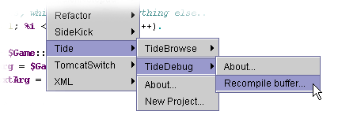
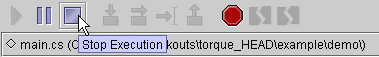

| Tide |
Version 1.2.0 (May 27, 2009)
By Paul Dana and Stefan "Beffy" Moises |
| Introduction |
This version requires:
| Using Tide |
Launch JEdit, open the plugin manager (Plugins -> Plugin Manager) and hit "Install Plugins".
It will search all available plugins on the server and list them.
Select the "Project Viewer" plugin and install it.
NOTE: I have also packed the current ProjectViewer jar file into the zip, so you can use that, too, if you want.
Copy the provided jar files from the zip into your "<JEdit_Install_Dir>/jars" directory.
After installing plugins or copying new plugins into the plugins dir, you have to restart JEdit to get it to load them!
After restarting, go to the ProjectViewer plugin configuration ("Utilities -> Global Options -> Plugins -> Project Viewer") and add TGE related file extensions under "Extensions to include" (cs mis gui hfl log ml).
Select "Plugins -> TIDE" and choose your desired action.

TIDEDebug will be added to the JEdit GUI by default:

You can dock TIDEBrowse to the JEdit GUI permanently by adjusting the docking style in
"Utilities -> Global Options -> Docking".
If you have any feature requests, comments, or if you would like to contribute to this project, write to:
Enjoy!